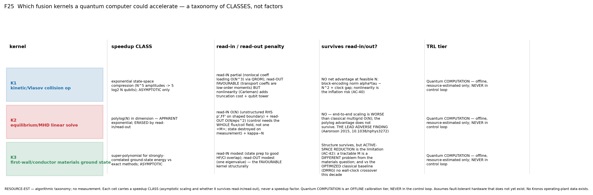
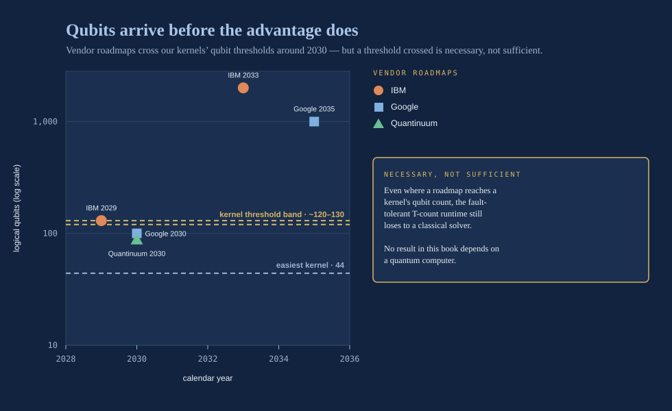
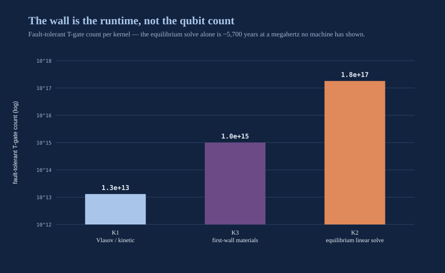
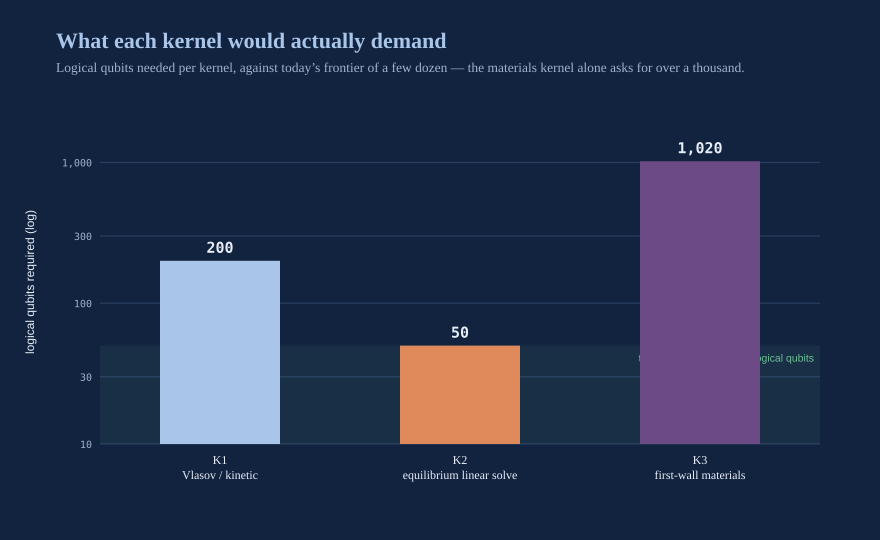
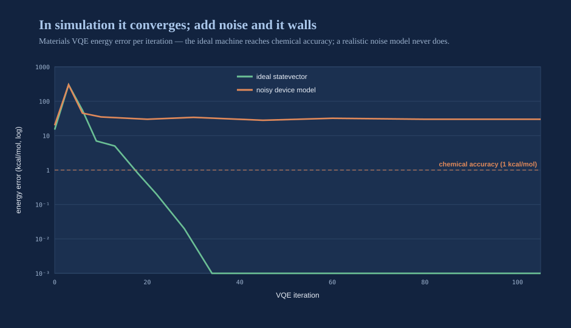
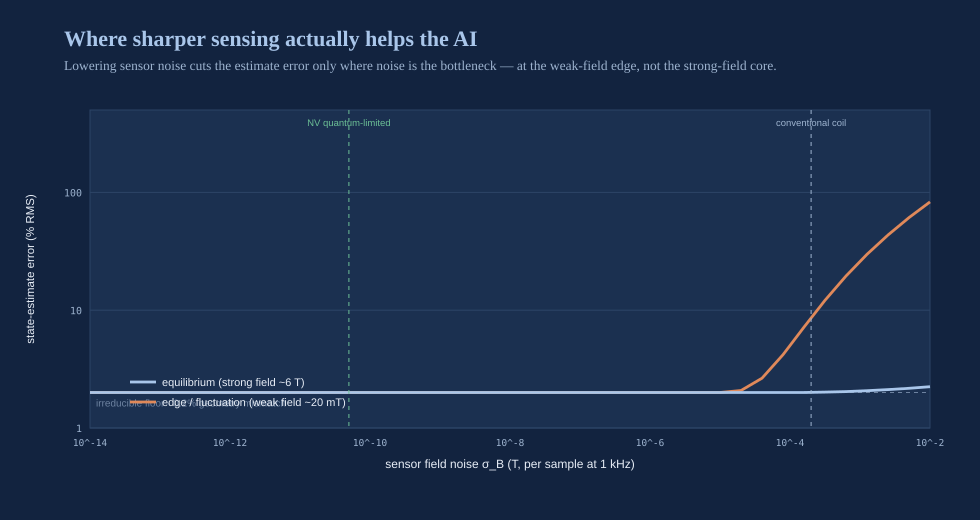

Narration in production — this player goes live when the chapter audio lands.
Quantum, Honestly
There are two words in modern science that can make an audience lean forward before you finish the sentence: fusion and quantum. Put them together and you have written the most seductive headline of the century — the two great physics revolutions of our age, joined at last, one computing the other into existence. In the 2024 version of this book, I wrote that headline. I let the word quantum do far more work than it had earned. I said, in effect, that a new kind of computer would crack the equations of the plasma the way a quantum machine is supposed to crack everything else, and that this was part of why our road to fusion would run faster than the field's. It was the most thrilling sentence in the chapter. It was also the least defensible one. Two years of actually grinding through the resource estimates — not gesturing at them, doing them, digit by digit — have taught me exactly where quantum technology helps these machines and exactly where it does not, and the honest map bears little resemblance to the one I drew before. This chapter is the correction. I would rather you catch me revising a claim than watch me never dare to test one.
The correction has a clean structure, and I will give it to you at the top so nothing is buried. There are two technologies that both get called "quantum," and they are on opposite sides of the honesty line. Quantum computing offers our problem no useful advantage this decade — the numbers are not close, and I will show you why. Quantum sensing is genuinely near and genuinely useful — it is the deployable quantum story, and it belongs to diagnostics, not to computation. Conflating the two is how a serious field talks itself into hype. Separating them is how it earns back trust.
The three tiers, held strictly apart
Discipline, in a field this intoxicating, is everything. When the company's engineers rebuilt the control and computation architecture for the two machines — the breeder Hyperion and the tandem-mirror burner — we forced ourselves to sort every technology we touch into one of three readiness tiers, and then we made a vow: never, under any temptation, let a claim slide from a lower tier into a higher one. That single rule is the firewall between a science and a sales pitch.
The first tier is physics-informed machine learning, deployable now, inside the control loop, provided its error is bounded and a deterministic clamp catches anything out of bounds. That is the subject of the AI chapter, and it is working today with hard numbers behind it.
The second tier is quantum sensing, near-term, living in the diagnostics layer — sharpening the measurement of the plasma's state that the AI then consumes. Not computing anything; measuring something, better.
The third tier is quantum computation, offline only — a calibration tier with, on our own estimates, no crossover against classical methods this decade. It does not touch the plant. It does not run inside any control loop. If it ever helps, it helps between shots, computing a high-fidelity closure that gets folded into a classical model through a gate that re-proves the machine is still safe before the new number is allowed to matter.

The discipline is the whole point. A sentence like "a quantum computer controls the plasma" is not optimistic — it is physically false, and I have retired it. A sentence like "quantum-computed closures reduce our surrogate error offline, with an explicit resource estimate and a dated crossover" is testable. So we tested it. The test came back negative for this decade, and printing that negative is the reason to believe everything else in this book.

Why quantum computing does not help — yet
Here is the part I got wrong, stated as plainly as I know how to state it.
The promise of quantum computing is one of the most genuinely astonishing ideas in the history of physics: harness the strange arithmetic of superposition and entanglement, and a machine could explore an exponential thicket of possibilities all at once, solving in an afternoon problems that would outlast the universe on any ordinary computer. That promise is real — for the right problems. The whole question is whether our problems are the right ones. To model or reconstruct a plasma you spend most of your computer time solving a small number of mathematical kernels over and over. Three of them matter most: the equilibrium solve (given the coils and currents, what shape does the plasma settle into?), the kinetic or Vlasov solve (how does the swarm of particles evolve in the six-dimensional space of position and velocity?), and the materials solve (how does the reactor wall's chemistry change under a fusion neutron bombardment?). The hope — my hope, when I first wrote this — was that a quantum computer would do one or more of these so much faster than a classical computer that the whole design-and-control problem would open up.
To check the hope honestly you cannot wave at "quantum speedup." You have to write down a specific fault-tolerant architecture — a surface-code machine with a stated physical error rate, code distance, cycle time, and a stated number of the "factories" that manufacture the expensive quantum operations — and then count. The expensive operation, the one that dominates the cost, is called a T-gate. So you count T-gates. Every assumption sits in a spreadsheet column, so no number is narrated into being; each one is derived.
We counted, for all three kernels, and none of them crosses over into quantum advantage this decade under any plausible assumption in the ranges we swept. The kinetic kernel needs roughly 130 logical qubits and about 1.3 × 10¹³ T-gates and still loses on wall-clock time to the classical gyrokinetic codes we already run. The materials kernel is the closest to useful — it lands within an order of magnitude of a published fault-tolerant chemistry estimate, which is actually how we validated that our cost model was not lying to us. And the equilibrium solve, the most everyday calculation of the three, produced the number that ended the argument.
The most defensible thing I can say about quantum computing and fusion is a date, not a promise. Not "it won't help" — "here is the problem, the algorithm, and the earliest year the hardware could possibly earn its place."
A number, translated. The equilibrium linear solve — once you honestly count the cost of loading the problem into the quantum computer and reading a useful answer back out — needs about 1.8 × 10¹⁷ T-gates. That read-in and read-out penalty is the killer, and it is the part hand-wavy treatments quietly drop; it erases the asymptotic speedup that made quantum linear algebra sound magical in the first place. What does 1.8 × 10¹⁷ mean in human terms? Imagine a fault-tolerant machine that could execute a million T-gates every second — a rate wildly beyond anything error-corrected hardware has ever demonstrated. At that rate, a single equilibrium solve would take about 1.8 × 10¹¹ seconds, which is roughly 5,700 years. And the control system needs a fresh equilibrium reconstruction many times per second, for the entire pulse. This is not a gap you close with a better compiler or one more hardware generation. It is astronomically beyond the near term, and it is the honest reason quantum linear algebra does not touch this problem today.

How you actually count. I want to be transparent about where a number like 1.8 × 10¹⁷ comes from, because a resource estimate that cannot be inspected is just a bigger promise. We fix a single cost model and apply it to all three kernels without adjustment. It assumes a specific kind of error-corrected machine — a surface-code architecture — with a stated physical error rate, a stated code distance (how many physical qubits are braided together to protect one logical qubit), a stated cycle time, and a stated number of the "factories" that manufacture the expensive T-gates. From those inputs, four outputs follow by arithmetic: the number of logical qubits, the number of T-gates, the depth of the circuit, and the wall-clock time. Every one of those assumptions lives in its own column of a spreadsheet, so no number is narrated into being — each is derived, and each can be swept across a plausible range to see whether the conclusion is fragile. It is not. Across every combination in the ranges we swept, no kernel crosses over this decade.
The three kernels are worth separating, because they fail for three different reasons, and the reasons are instructive.
- The kinetic (Vlasov) kernel is limited by the mathematical machinery you need to make a quantum computer handle it at all. The collision physics is nonlinear, and a quantum computer's native operations are linear, so you first lift the problem into a much larger linear space — a Carleman tower — and that lifting multiplies the qubit register. The result: about 130 logical qubits and roughly 1.3 × 10¹³ T-gates, and even then it loses on wall-clock to the classical gyrokinetic codes we already run today.
- The equilibrium linear solve is the cautionary tale of the three, because on paper it is where quantum linear algebra promises the most, and in practice it is where the promise evaporates most completely. The famous quantum speedup for solving linear systems is real inside the machine — but you have to load the problem in and read a useful answer out, and both of those cost dearly. Preparing the input state and extracting a meaningful functional of the solution, rather than a single lucky amplitude, erases the asymptotic advantage and drives the T-count to 1.8 × 10¹⁷. That read-in/read-out penalty is the part hand-wavy treatments quietly drop.
- The materials kernel is the closest to useful, and it plays a special role: it lands within an order of magnitude of a published fault-tolerant chemistry estimate for a comparable problem. That agreement is not a result about materials — it is how we checked that our whole cost model was not lying to us. If our independent count of a problem someone else has costed agrees with theirs, the model is calibrated, and its verdict on the other two kernels can be trusted.
The read-in and read-out penalty is where quantum linear algebra dies for this problem. The speedup is real inside the box. Getting the question in and the answer out is what costs 5,700 years.
I want to be careful about what that estimate is and is not. It is a negative result for this decade. It is not a claim that quantum computation is irrelevant to fusion forever. Three fusion problems are classically hard in a deep, structural way — first-principles turbulent transport across a whole device over long times; plasma-and-wall evolution under neutron irradiation, which is a strongly-correlated quantum-chemistry problem exactly where our engineering margins are thinnest; and the coupled kinetic-electromagnetic behavior near the edge of stability, where the answer you need is a small difference between large, noisy quantities. For each of these, a fault-tolerant quantum computer genuinely changes the asymptotic cost. So the honest posture is not "quantum will never help." It is: here is the specific problem, the specific algorithm, the logical-qubit and error-rate threshold it demands, and therefore the earliest defensible date. A roadmap, with thresholds on it — not a miracle on the loop.

Our variational proof-of-concept tells the same story in miniature, and it is worth watching the gap open. A variational algorithm is one of the leading candidates for getting useful chemistry out of near-term, not-yet-fault-tolerant hardware, so it is the fairest test of the optimistic case. On an idealized statevector simulator — a perfect, noiseless machine that exists only in software — it reaches chemical accuracy, which is genuinely encouraging and is the number an optimist would quote and stop. But a real quantum processor is not noiseless; every gate leaks a little error, and those errors compound. Switch on a realistic model of that device noise and the same algorithm misses chemical accuracy by somewhere between fourteen and thirteen hundred times, depending on the problem. That factor between the clean simulator and the noisy one is the scale wall — the distance between what quantum computing can do in principle and what today's hardware can do in fact. And I have to be scrupulous here: this is simulator-only work. We modeled the noise; we did not run on cloud quantum hardware, and I will not let a careful reader come away thinking we did.

Quantum computing's actual, useful job: offline calibration
Retiring a false claim is only half of honesty. The other half is finding the true thing that was hiding underneath it. There is one, and it is quietly powerful.
If a high-fidelity closure ever can be computed — classically today, or by a quantum computer on the dated roadmap above — the right way to use it is not to put it in the control loop. It is to use it as a rare, expensive anchor that calibrates a cheap, fast classical surrogate the loop actually runs. This is the mechanism at the heart of our architecture, and it is measurable. Inject a handful of high-fidelity closure anchors into a control surrogate and its error drops by up to roughly seventeen-hundred-fold on a chemistry benchmark, reaching chemical accuracy with as few as five anchors. Crucially, we demonstrated this with a classical full-configuration-interaction calculation standing in for the future quantum-computed closure — so it is a demonstration of the mechanism, honestly, not a demonstration of quantum advantage sneaking in the back door.
And the reason I trust this mechanism is that it is not a chemistry trick — it transfers. The same lever we pulled on the chemistry benchmark, we pulled on two problems that have nothing to do with molecules. On a plasma-transport closure — the physics of how heat leaks across the confined plasma — eight high-fidelity anchors cut the surrogate's error by 36.8-fold, beating the best reduced-physics model by nearly a factor of ten. On the magnet twin — the strain in a superconducting coil under load — the same lever reached up to three orders of magnitude, a factor of 7475 at its strongest. Three domains as different as chemistry, turbulent heat transport, and structural mechanics, and one mechanism improves all three. That is what convinces me it is real rather than a coincidence of one lucky benchmark: a domain-specific fluke does not survive being carried into two unrelated fields. A general mechanism does. So when I say quantum computing's honest job is to be an anchor factory, I am not speculating about a role it might one day play — I am describing a pipeline that already works, waiting only for a better source of anchors.
That reframing is what makes the architecture forward-compatible with quantum hardware without betting the plant on it. The day a machine capable of one of those three closures exists, its output enters our plant only as an offline, provenance-gated calibration anchor — admitted through a gate that re-proves the safety invariant before the new number is allowed to change a single actuator command — and never as an in-loop dependency. Quantum computing earns its place at the design-and-calibration layer, on named problems, on a dated schedule. That is the whole, honest thesis, and it is a far smaller and far truer claim than the one I made before.
The quantum win that is real today — and is not a quantum computer
Now for the twist in the story — the win that is real today, hiding in plain sight amid all this walking-back. It turns out you do not need to build the quantum computer to harvest one of quantum physics' deepest insights. You only need to think the way the quantum theorists learned to think. This is a quantum-inspired classical method — no dilution refrigerator, no logical qubits, no fault-tolerant hardware anywhere in sight — and it works on today's machines.
The kinetic kernel — the six-dimensional particle problem — can be attacked with a technique borrowed from quantum many-body physics called a matrix-product state, or tensor network. The idea is worth unpacking, because it is the single best illustration of what "quantum-inspired" honestly means. When physicists first tried to simulate quantum systems on classical computers, they hit a wall: the mathematical object describing a many-particle quantum state grows exponentially with the number of particles, and it swamps any machine almost immediately. The escape was the realization that most of that object is redundant — real physical states do not use all their theoretical correlations, only a structured few. A matrix-product state is a way of storing only the correlations that actually matter, throwing away the rest in a controlled way. The control knob is a single number, the bond dimension d: crank it up and you keep more correlation and pay more; turn it down and you approximate more crudely and pay less. It is a dial that trades accuracy for cost, and you set it exactly as high as the physics demands and no higher.
Applied to the kinetic kernel, the dial tells an honest story. At small bond dimension — d = 3, d = 4 — the classical brute-force methods still win, and we kept that result rather than hiding it, because a benchmark that only reports the settings where you win is not a benchmark. But the picture inverts as the physics gets richer. At d = 6 the tensor-network solver beats the classical baseline by about 3.9 times at fixed cost; at d = 7 by 21.2 times; and — this is the part that matters — at d ≥ 10 it is the only feasible method at all. Beyond that bond dimension the classical baseline simply cannot fit in the machine; the tensor network still can. We validated it to machine precision, one part in 10¹⁵, against exact diagonalization on the cases small enough to check both ways, so the speed did not come at the price of correctness. It is a benchmark that bounds the near-term quantum claim from below — anything a real quantum computer eventually does to this kernel has to beat this, not the naïve baseline — and the underlying approach is published, not invented here. The lesson is worth keeping: the useful "quantum" in fusion computing this decade is a way of thinking, imported into classical code — not a quantum processor humming in a dilution refrigerator.
Quantum sensing: the deployable quantum story
Now the technology that is genuinely, unglamorously near — the quantum revolution that will actually walk through the door of a fusion plant this decade. When people hear "quantum" and "fusion" in the same breath and get excited, this is what they should be excited about, and almost nobody is, because it does not come with the science-fiction glow of a quantum computer dissolving the equations of the plasma. What it does is humbler and, for us, far more useful. It measures a magnetic field. That is all. But it measures the field absolutely — anchored to a constant of nature that cannot drift, cannot age, cannot be argued with — and that unwavering honesty is worth more to these machines than any amount of raw sensitivity.
A quantum magnetometer reads a magnetic field by watching what the field does to the quantum states of atoms or defects. The best-known kind, the nitrogen-vacancy or NV center, is an atomic-scale flaw in a diamond whose energy levels split apart in proportion to the field. You read the field as a frequency — and a frequency is tied to a fundamental constant of nature, the electron gyromagnetic ratio, γₑ ≈ 28.03 GHz per tesla. That is the magic, and it is a subtle magic.
Here is the counterintuitive part, and it is the finding that reorganized how I think about sensing in our machines. The femtotesla sensitivities that make quantum magnetometers famous are irrelevant inside a tokamak. Our fields are measured in teslas — eight teslas on axis in Hyperion. That is a trillion to a thousand-trillion times larger than the sensor's noise floor. Quantum sensing does not win on sensitivity here; there is nothing subtle to detect. If it wins, it wins on something else entirely.

It is worth dwelling on why, because the whole excitement around quantum metrology is about sensitivity, and I am telling you sensitivity is the wrong axis for this job. The reason quantum sensors can be so exquisitely sensitive is a scaling law. A conventional measurement that averages N independent quantum probes beats down its noise as one over the square root of N — the shot-noise limit, the same law of averages that governs a political poll. Entangle those probes first, and in principle the noise falls as one over N itself — the Heisenberg limit, quadratically better. That quadratic is the crown jewel of quantum sensing, and it is genuinely revolutionary for measuring things that are almost too faint to detect: a single neuron's magnetic whisper, a gravitational wave, a trace of a molecule.
``` Two ways precision improves with N probes:
shot-noise limit δB ∝ 1 / √N (independent probes)
Heisenberg limit δB ∝ 1 / N (entangled probes)
In a tokamak the field is ~8 T and the sensor floor is ~femtotesla — fifteen orders of magnitude of headroom. Neither scaling law is the binding constraint. Sensitivity is not the problem we have. ```
Hold those two scaling laws up against the numbers and the conclusion is unavoidable. When the quantity you are measuring is fifteen orders of magnitude above your noise floor, it does not matter whether your noise falls as one over root-N or one over N; you have precision to burn either way. The heroic quantum sensitivity is spent on a problem we do not have. So if a quantum magnetometer is going to earn a place in one of our machines, it has to earn it on a completely different property — and it does.
What a frequency reference buys you. The conventional way to measure a tokamak's field is with inductive pickup coils that measure the rate of change of the field and then integrate it up over time. Integrators are excellent — abundant signal, huge bandwidth, radiation-hard cabling — but they have one deep weakness: over a long pulse they drift. And in a neutron field the drift is not merely electronic. The radiation itself injects spurious voltages directly into the sensor cabling (the effect has an ungainly name, radiation-induced electromotive force) that corrupt the integrated field over a long shot. A quantum magnetometer does not integrate anything. It reports an absolute frequency tied to a constant of nature. It cannot accumulate that drift because there is nothing accumulating. That is the gap it fills — not sensitivity, but absolute, drift-immune, self-calibrating accuracy over a long pulse. As a bonus, a single NV center reports its own temperature at the same time, from a separate, known frequency shift of −74 kHz per kelvin — a co-located field-and-temperature reading with no classical analogue.
Three modalities anchor this tier, and they sort cleanly by maturity. The superconducting-loop magnetometer — the SQUID — is the most established; it already sits in fusion diagnostics, offers the highest raw sensitivity, and pays for it with cryogenics and a fussy intolerance of stray field. The nitrogen-vacancy diamond is the most promising for actually living inside a vessel: it is solid-state, it works from cryogenic temperatures all the way to room temperature, and it needs no exotic support — but its demonstrated sensitivity trails the SQUID and, as I am about to explain, its survival in a neutron field is the open question that decides everything. The atomic, optically-pumped magnetometers sit in between. And there is a second axis besides maturity that matters just as much and gets forgotten: bandwidth. A sensor that cannot report a fresh reading inside the control system's latency band is, by definition, an offline-analysis instrument no matter how sensitive it is — it cannot enter the loop, because the loop has already moved on by the time it answers. So we sort every modality twice: by how mature it is, and by whether it is fast enough to be in the loop or only fast enough to inform the analysis afterward.
I have to be equally honest about what stands in the way, because this is a scoping result, not a finished diagnostic. The other famous quantum magnetometers are ruled out at the source: the ultra-sensitive atomic (SERF) magnetometer only works in a near-zero field and is simply dead at eight teslas, and a SQUID is destroyed by flux trapping in any multi-tesla stray field and needs cryogenics besides. That leaves the NV diamond, and the NV diamond faces a radiation problem that decides everything. Using our own neutron-transport fluence maps, an unshielded NV sensor at the first wall — exactly where an in-vessel field measurement would be most valuable — has a functional life on the order of a single day, on our assumed degradation threshold. It only reaches a multi-year life behind sixty centimeters of shielding or fully outside the vessel — which is precisely where the conventional magnetics already sit, and where the drift advantage, while still real, is least urgent. Radiation pushes the quantum sensor toward the one place its unique advantage matters least. And I will flag the single largest uncertainty rather than smooth it over: the fluence at which an NV center actually stops working under a fusion neutron spectrum is, to the best of the public record, unmeasured. It is an assumption in our study, and the decisive experiment that would settle it has not been done. A fusion-qualified NV magnetic diagnostic is, honestly, at technology-readiness level two to three — a bench program, not a product.
So the deployable quantum story is real but modest, and I would rather give you the modest true version. Quantum sensing's genuine, non-redundant contribution to these machines is an absolute, drift-immune, steady-state magnetic reference — most likely mounted outside the vessel — that anchors the long-pulse drift of the conventional coils and feeds a cleaner boundary condition into the equilibrium reconstruction the AI consumes. It is a complement that closes the one real weakness of an otherwise superb classical diagnostic set. It is not a replacement, and it is not a revolution. It is a good, honest instrument with a hard radiation problem still to solve.
Why I am telling you this
I could have quietly dropped the quantum-computing claim this time and hoped no one who read the earlier version noticed. That is the normal move. I am not making it, for a reason that goes beyond this one chapter.
A book like this asks you to believe a great many numbers you cannot personally check — the gain, the field, the neutron balance, the timeline. You have every right to ask why you should. My answer is the same one I gave when I retired the phrase "net gain in 2027" and replaced it with the truth that 2027 is when construction begins: I would rather show you a corrected claim than a comfortable one. The quantum-computing walk-back is the cleanest example I have. We ran the estimate, the estimate said no crossover this decade, and so the claim is gone — reframed into the smaller, truer role it actually plays. A field, and a founder, willing to say this part of my last book was too optimistic has, I think, earned the standing to be believed on the parts that held.
So let this chapter stand as the proof of the whole book's method. The quantum honesty is not a crack in the story. It is the load-bearing beam holding the story up. We live in an age drunk on the word "quantum," an age that will attach it to anything to make it shimmer — and it would have cost me nothing to let fusion shimmer along with the rest. I chose the harder, truer thing. Everything else in these pages — the gain, the fields, the neutron balance, the forty-year horizon — asks for your trust, and here is the collateral I put down for it: when the numbers contradicted my enthusiasm, I printed the numbers. A field willing to do that is a field you can follow all the way to a star.